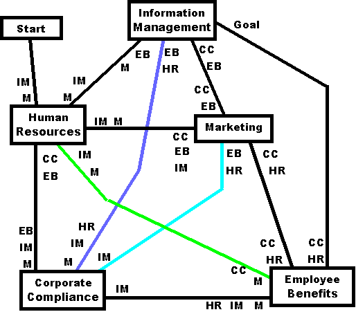

|
The lines indicate the connections between desks. Just before you arrive at a desk, there are initials next to the line. These indicate where you can go after you receive the next form. For example, if you go from CC (Corporate Compliance) to EB, you follow the line at the bottom of the diagram. The initials there indicate that you can next go to HR, IM, or M. If you want the solution, click on the map (you might first center it so you can view it easily). This maze could have been a lot harder; in fact, my first draft of the 5-desk maze was harder. The solution was the same as the current maze, but the false paths made up a confusing network. I worried that if you're trying to solve the maze, you wouldn't be able to figure out where you were and you could never figure out if you were on a false path. So I changed the false paths to dump you into a 3-desk loop that goes from IM to EB to CC and back to IM. I figured that if you went around that loop a few times you could figure you weren't on the correct path. There is a way out of that loop: at some point you choose to go to HR. You'll then be back at a point that is the same as the start of the maze. |